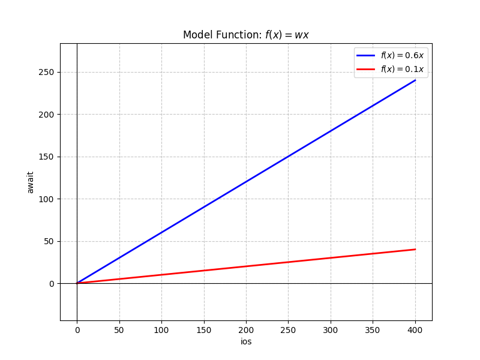
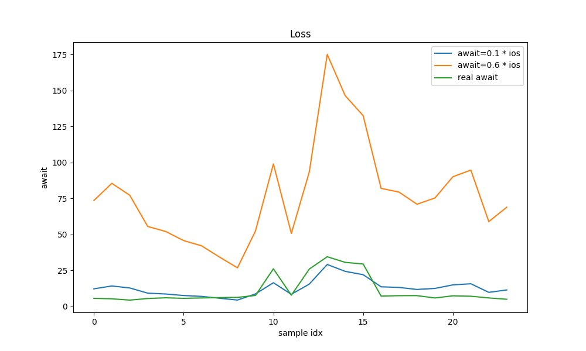
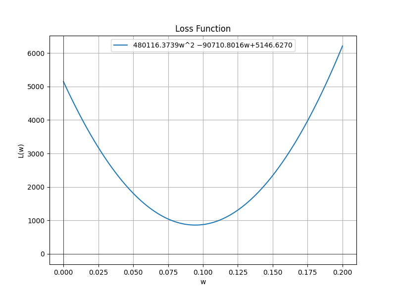
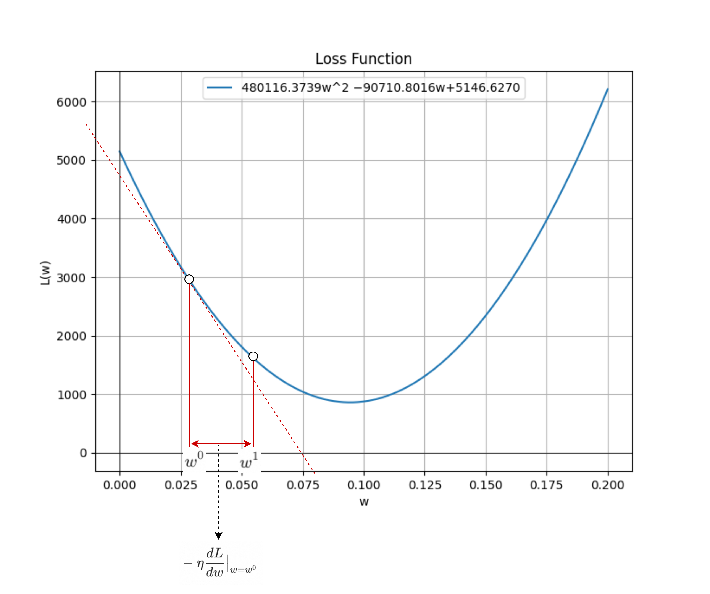
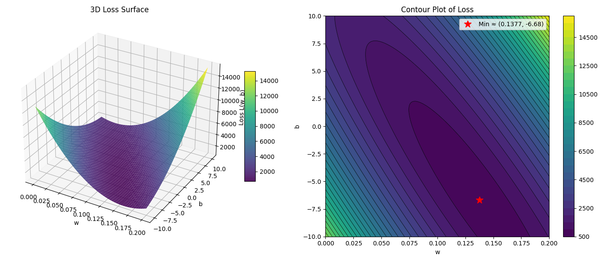

机器学习原理入门。
问题描述 (1)
现有一些HDD磁盘的性能数据(通过iostat采集)，如下所示：
| idx | rrqms | wrqms | rs | ws | ios | rsecs | wsecs | iosecs | await |
|---|---|---|---|---|---|---|---|---|---|
| 1 | 2.08 | 5.63 | 35.72 | 106.82 | 142.54 | 3200.0 | 14500.0 | 17700.0 | 5.34 |
| 2 | 2.23 | 7.42 | 19.10 | 109.62 | 128.72 | 2600.0 | 15100.0 | 17700.0 | 4.44 |
| 3 | 2.47 | 9.78 | 18.17 | 74.43 | 92.60 | 2700.0 | 8700.0 | 11400.0 | 5.55 |
| 4 | 2.57 | 9.52 | 17.85 | 69.00 | 86.85 | 2900.0 | 8000.0 | 10900.0 | 6.05 |
| 5 | 2.35 | 7.52 | 16.17 | 60.10 | 76.27 | 2400.0 | 7100.0 | 9500.0 | 5.66 |
| 6 | 2.30 | 6.67 | 16.13 | 54.10 | 70.23 | 2400.0 | 6600.0 | 9000.0 | 5.94 |
| 7 | 1.83 | 4.15 | 16.13 | 41.03 | 57.16 | 2300.0 | 4400.0 | 6700.0 | 6.18 |
| 8 | 1.28 | 3.28 | 12.27 | 32.50 | 44.77 | 1600.0 | 3600.0 | 5200.0 | 6.34 |
| 9 | 1.05 | 1.75 | 52.85 | 34.50 | 87.35 | 2300.0 | 3200.0 | 5500.0 | 7.67 |
| 10 | 0.87 | 1900.00 | 118.17 | 46.87 | 165.04 | 18400.0 | 18400.0 | 36800.0 | 26.19 |
| 11 | 0.57 | 1.62 | 54.40 | 30.15 | 84.55 | 2700.0 | 2800.0 | 5500.0 | 7.82 |
| 12 | 0.45 | 1700.00 | 113.00 | 42.75 | 155.75 | 16000.0 | 17200.0 | 33200.0 | 26.00 |
| 13 | 0.57 | 4600.00 | 218.90 | 72.85 | 291.75 | 39000.0 | 40700.0 | 79700.0 | 34.55 |
| 14 | 0.80 | 3300.00 | 178.38 | 65.62 | 244.00 | 29000.0 | 30500.0 | 59500.0 | 30.65 |
| 15 | 0.72 | 2900.00 | 158.85 | 62.03 | 220.88 | 25200.0 | 27300.0 | 52500.0 | 29.51 |
| 16 | 1.37 | 6.77 | 56.90 | 79.83 | 136.73 | 2500.0 | 8400.0 | 10900.0 | 7.22 |
| 17 | 1.60 | 6.48 | 63.85 | 68.55 | 132.40 | 2900.0 | 7900.0 | 10800.0 | 7.52 |
| 18 | 1.23 | 6.03 | 55.65 | 62.70 | 118.35 | 2700.0 | 7200.0 | 9900.0 | 7.54 |
| 19 | 1.53 | 6.03 | 35.93 | 89.67 | 125.60 | 2300.0 | 13700.0 | 16000.0 | 5.92 |
| 20 | 1.53 | 6.82 | 48.83 | 101.32 | 150.15 | 2700.0 | 16100.0 | 18800.0 | 7.42 |
| 21 | 1.73 | 7.48 | 57.03 | 100.82 | 157.85 | 2900.0 | 16400.0 | 19300.0 | 7.13 |
| 22 | 1.95 | 6.03 | 24.35 | 73.90 | 98.25 | 2300.0 | 15000.0 | 17300.0 | 5.95 |
| 23 | 1.90 | 7.02 | 26.77 | 88.12 | 114.89 | 2500.0 | 15400.0 | 17900.0 | 5.04 |
| 24 | 2.20 | 6.72 | 37.12 | 85.57 | 122.69 | 3500.0 | 14600.0 | 18100.0 | 5.67 |
其中：
- rrqms: 每秒合并的read io
- wrqms: 每秒合并的write io
- rs: read io per second
- ws: write io per second
- ios: rs + ws
- rsecs: read sectors (512B) per second, i.e. read bandwidth
- wsecs: write sectors (512B) per second, i.e. write bandwidth
- iosecs: rsecs + wsecs, i.e. total bandwidth
- await: latency in milliseconds
要通过机器学习的方法，找出await与其它指标(ios, rs, ws, iosecs, rsecs, wsecs, …)的关系，即：
$$
await = f(x_1, x_2, …)
$$
其中$x1$, $x2$, … 代表磁盘的其它指标(ios, rs, ws, iosecs, rsecs, wsecs, …)；
有了这个模型之后，就可以判断一个磁盘是否故障：若实际await高出模型计算出的期望await太多（例如实际await大于2倍的期望await），就判定为故障。
学习的效果，通过测试数据来检验：
机器学习最简过程 (2)
所谓机器学习（训练），就是要生成一个上一节提到的函数$f$；分为3步：
- step1: 定义模型，即一个带有未知参数的函数
- step2: 定义损失函数；
- step3: 梯度下降，以确定step1中的未知参数；
这里“参数”的意义不同意编程中的参数；以C语言为例
1 | float f(float x1, float x2) |
其中的x1和x2是参数；但在机器学习中，w1、w2和b是参数。因为机器学习的过程不是函数$f$执行的过程，而是寻找函数$f$的过程；在模型确定的情况下，就是寻找或者确定参数的值（有点类似于待定系数法？）。函数$f$的input x1和x2叫特征。例如:
- 有一个函数$f$，input是重量、颜色，output是“花或者叶子”；重量和颜色是待判断目标的特征。
- 本例机器学习完成之后得到一个函数$f$，input是
ios和iosecs，output是预期await；ios和iosecs是样本的特征。
定义模型 (2.1)
先假定只有ios这一个input，即只通过ios这一个指标来预测磁盘的await；
拍脑袋猜测它们是线性关系，即
$$
await = f(x) = w \cdot x
$$
其中$x$代表input ios，$w$即未知参数。

- 注意1：实际工程中，选择模型需要专业知识（domain knowledge）；
- 注意2：这里假定模型只有一个未知参数$w$；很多课程此时会假定有2个参数，除$w$外还有一个$b$（叫做bias）；我们从最简单的情形开始：只有一个参数时，损失函数的图像是一条曲线，计算其微分也不涉及偏微分。搞明白道理之后，再扩展为2个及更多参数。
在选定一次函数且无bias的情况下，模型的好坏完全取决于唯一参数$w$。机器学习（训练）的过程，就是找到一个最优的$w$，使得通过模型计算出来的结果和真实结果最接近；

显然，$w=0.1$比$w=0.6$的损失要小！如何衡量模型计算出来的结果和真实结果是否接近呢？
定义损失函数 (2.2)
损失函数用来衡量$w$有多好。对于我们的例子，可以这样：
- 使用模型计算await；
- 和真实的await做差，然后再平方；24条训练数据，会得到24个平方；
- 把这些平方累加起来；
注意：一般情况，还会对累加结果再开根号；为了简单这里也不再开根号了，反正它们的趋势是一样的；
$$
L(w) = \sum_{n=1}^{24} (w x_n - a_n)^2
$$
其中：$x_n$代表$ios_n$，$a_n$代表$await_n$；$n \in {1, …, 24}$；这些就是训练数据，是已知的；所以，这个函数的表达式可以精确地写出来：
$$
L(w) = 480116.3739 w^2 - 90710.8016 w + 5146.6270
$$

显然，当
$$
w = - \frac{-90710.8016}{2 \cdot 480116.3739} = 0.0944
$$
时，损失最小:
$$
L = 862.0172
$$
现实中的损失函数很复杂，不可能求出解析解。即使有的损失函数有解析解，参数动辄几百亿，以算法复杂度$O(n^3)$为例，算到地球毁灭也算不出来。所以，只能通过梯度下降的办法去寻求局部最优解，或者在有限次迭代之后停止！。
这里已知最优解，为了展示梯度下降方法是如何找到它的。
梯度下降 (2.3)
首先，随机选择一个点$w^0$，计算损失函数$L(w)$在$w=w^0$处的导数$\frac{dL}{dw}\big|_{w=w^0}$；假如导数等于0，说明点$w^0$刚好就是最优解。学习终止。否则：
- 假如导数小于0，说明点$w^0$在最优解$w = 0.0944$的左侧；向右寻找：$w^1 = w^0 - \eta \frac{dL}{dw}\big|_{w=w^0}$
- 假如导数大于0，说明点$w^0$在最优解$w = 0.0944$的右侧；向左寻找：$w^1 = w^0 - \eta \frac{dL}{dw}\big|_{w=w^0}$
所以，无论是哪种情况，下一个更优解$w^1$都是:
$$
w^1 = w^0 - \eta \frac{dL}{dw}\big|_{w=w^0}
$$
其中$\eta$是一个提前选定的大于0的常数，叫做learning rate，表示每一步前进的幅度或者步幅。
在机器学习中，提前选定的常数（不是通过学习得到）叫做hyper-parameter。

按照这个思路迭代，每次更新$w$：
$$
w^{n+1} = w^n - \eta \frac{dL}{dw}\big|_{w=w^n}
$$
直到导数为0，或者迭代次数到达上限，比如100万次。最大迭代次数，也是一个hyper-parameter。
假设：
$$
\begin{aligned}
& \eta = 0.000001 \\
& w^0 = 5000.0
\end{aligned}
$$
下面是9轮迭代的参数更新记录：
$$
\begin{aligned}
& d = 4801073028.1984, w = 198.9270, L = 18981096715.4305 \\
& d = 190925481.9430, w = 8.0015, L = 30018218.9515 \\
& d = 7592581.7918, w = 0.4089, L = 48332.4943 \\
& d = 301936.1150, w = 0.1070, L = 937.0864 \\
& d = 12007.1696, w = 0.0950, L = 862.1337 \\
& d = 477.4921, w = 0.0945, L = 862.0152 \\
& d = 18.9886, w = 0.0945, L = 862.0150 \\
& d = 0.7551, w = 0.0945, L = 862.0150 \\
& d = 0.0300, w = 0.0945, L = 862.0150
\end{aligned}
$$
注意：若$\eta$选择的不好（例如大一点），学习不但不会收敛，反而会迅速发散。想象一下：若$w^n$在对称轴右侧，距离100；下次更新，$w^{n+1}$肯定在$w^n$的左边，但如果$\eta$太大，$w^{n+1}$被更新到对称轴左边，并且距离超过100；距离最优解更远了。以此类推，$w^{n+2}$被更新到对称轴右侧，且距离进一步加大…… 这时最常用的手段是降低$\eta$。
小结 (1.4)
- 机器学习的目的就是找到、或者生成一个函数$f$。这个函数看上去具有智能，例如输入磁盘ios输出await、输入声音输出文字、输入围棋局面输出下一个落子位置，等等。
- 机器学习分三步：
- 依靠domain knowledge选择一个带未知参数的模型函数；
- 定义损失函数；
- 随机选择未知参数，然后通过梯度下降的方法优化未知参数；
- 涉及3个函数图形：
- 图1：模型函数，就是机器学习找到、或者生成的函数。它的图形约接近理想中的“智能体”越好。例如：真实磁盘
await和ios的关系可能是分段的，ios较小时成线性；超过某个阈值后指数增长。前面假设的线性关系，就不会太好（题外话：不过训练数据没有体现出来，应该没有达到阈值）。 - 图2：待定参数取某组（某个）特定值时，预测数据与真实数据（训练数据）之间的差距，即两条折线离多远。
- 图3：损失函数；自变量是待定参数，因变量是损失多少。
- 图1：模型函数，就是机器学习找到、或者生成的函数。它的图形约接近理想中的“智能体”越好。例如：真实磁盘
其实图1和图2是等价的。
增加参数(3)
假如还是假设await与ios是线性关系，但增加一个参数$b$ （bias）。一方面，猜测ios接近0时，也有个基础的await（不一定准），bias可以捕捉到它；另外一方面，增加一个参数，更重要的目的是为了展示：
- 一个input特征（
ios）也可以有多个待定参数； - 多个待定参数，梯度下降如何进行（2个待定参数时，损失函数是一个曲面）；
定义模型 (3.1)
$$
await = f(x) = w \cdot x + b
$$
定义损失函数 (3.2)
和之前一样，但预测值变成$w x_n + b$，且损失函数有两个参数。所以损失函数变成：
$$
L(w,b) = \sum_{n=1}^{24} (w x_n + b - a_n)^2
$$
其中：$x_n$代表$ios_n$，$a_n$代表$await_n$；$n \in {1, …, 24}$；代入24条训练数据，得到：
$$
L(w,b) = 480116.3739 w^2 + 6210.7400 w b + 24.0000 b^2 - 90710.8016 w - 534.6000 b + 5146.6270
$$

同样可以求出解析最优值：
$$
\begin{aligned}
& w = 0.1377 \\
& b = -6.68 \\
& L = 688.57
\end{aligned}
$$
下面演示如何通过梯度下降的方法逼近它。